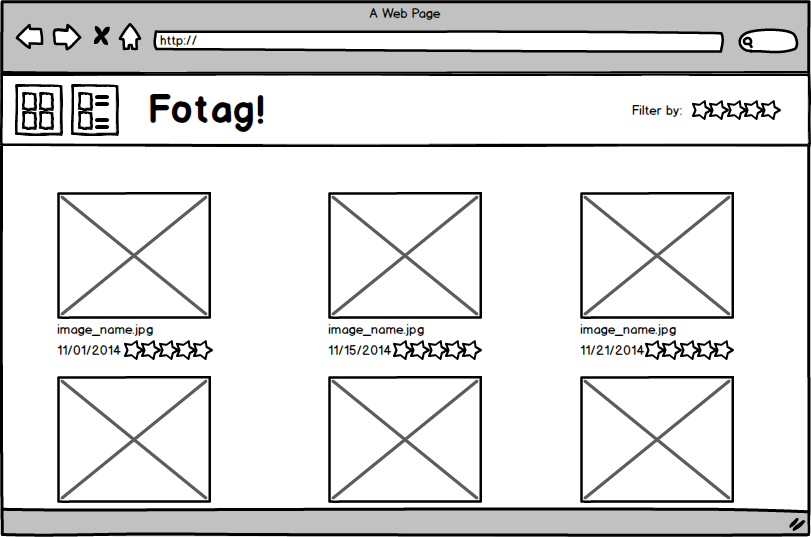
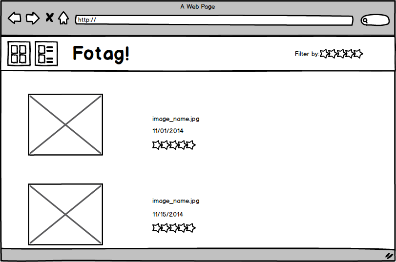
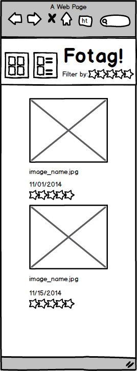

The goals of this assignment are to give you an opportunity to:
You will do so in the context of creating an interactive, single-page web app that allows users to load images from the file system, rate them, and filter them based on rating.
In this assignment, you will create a photo rating web application called Fotag, which allows users to display a set of images using different views. Users can rate each image, and filter images based on their ratings. The images will be "loaded" from the file system, and chosen using HTML5's new file chooser capabilities. The images chosen, and the ratings, will be stored locally using localStorage. We have provided you with code that deals with storing and retrieving image collections.
For this assignment, you cannot use any third-party HTML, JavaScript, CSS, or code-generation utilities. You must create all HTML, JavaScript, and CSS on your own.
Users can view the images in two modes -- grid layout (which arranges the photos in a grid format) or list layout (which arranges the photos one after another, along with the metadata for each photo). To switch between these two layout modes, users can click a button found in a toolbar that is fixed to the top. The two view selection buttons should be image-based toggle buttons: when pressed, a button should appear and remain depressed until the other button is pressed.
Your application should also be responsive to the user's display. More specifically, it must render differently on smaller displays/screens/windows than on larger displays/screens/windows (effectively, this means there are two visual designs for your app, one for small sizes, one for large sizes). These differences should be handled entirely by CSS designed for the two different sizes (the breakpoint is defined below). When displayed on a mobile device:
In no case, should a horizontal scrollbar appear (for small or large displays).
See the following mock-ups for an idea of what the application should look like.
The grid view:  The list view:  A responsive view: Users can rate each image by selecting the number of stars to assign to that image. They should also be able to filter images with a minimum rating (e.g., 3-star) by clicking on the search filter on the top right of the screen, in the toolbar. Note that you will need to determine whether it is useful for the user to be able to clear a rating after it is given, and if so, how that should be done.
By default, the images should be displayed as smaller thumbnails. Clicking on an image should enlarge it. However, it should never be larger than the width of the screen. You should also provide a mechanism to return the image to a smaller size. You may choose the means of displaying the larger image, but it should be your own code (not code taken from the web).
fotag.html is the web page for your application, with fotag.js the application's main entry point. model.js should house your models, and view.js should contain your views. You should place all of your CSS in fotag.css. There are a number of examples within the provided code for creating widgets, dealing with file selections, and storing and loading data. Study these carefully and adapt them to your needs.
We will be using HTML5's new File API to select multiple files on the file system. This API provides a file name and modification date for each file chosen.
You will use img tags to "load" images into the web page.
The File API does not provide an absolute path to the file, which is problematic, since
the img tag requires an absolute or relative path to a
file. Accordingly, we will assume all files that are chosen are chosen from the images/ directory.
Given this assumption, when a user chooses an image filename.jpg, and you wish to view it, you can construct
an img
tag whose src is images/filename.jpg. We have included
a handful of images in that directory to facilitate testing. Please do not delete these images,
as they may be used in testing.
We have already provided demo code that demonstrates how to select images and place them in the models specified below. When a user selects images to view, they should be saved via localStorage using the provided code. Furthermore, when reloading the page, the app should automatically load the images from localStorage and redisplay them.
The File API (theoretically) also allows users to drag and drop files into the browser to select them. See http://www.html5rocks.com/en/tutorials/file/dndfiles/ for example code. This functionality is not required, but would be useful.
For the purposes of this assignment, a "small" device should be considered any device, display, or window whose width is less than 760 pixels. Set your media query breakpoints in CSS accordingly. We will test your application to ensure it is responsive when the window size or device size is smaller than 760 pixels.
Your implementation must make use of the model-view-controller architecture. Specifically, you must implement the following models, stubbed out in model.js:
ImageModel
ImageCollectionModel
The ImageModel represents a single image: the path to the image, its modification date,
the user rating, and any user-supplied caption. The modification date, user rating, and caption all
represent its metadata. You do not need to support the ability for users
to caption images, though that would be a nice, and useful, feature.
The ImageModel must implement the Observer pattern, and notify listeners whenever it changes in any way. The signature for listeners is specified in the code.
The ImageCollectionModel represents a collection of ImageModel objects. It must
also
implement the Observer pattern and notify listeners whenever it, or any of its
ImageModel objects,
changes in any way. The signature for listeners is specified in the code.
You must implement the following views, found in view.js:
ImageRenderer
ImageRendererFactory (technically, not a view)
ImageCollectionView
Toolbar
All of your views should be able to be instantiated multiple times. In other words, they should
be template-based and not have IDs assigned to their individual elements. You must define
these views using the template tag in the app's HTML.
The ImageRenderer is the object responsible for rendering a single ImageModel in
the web page (where the ImageModel includes both the image and its metadata). It must
support two modes of rendering its contents, corresponding to either
list or grid view.
The renderer must also be responsive and change its appearance according to the width of the display/window it is rendering on. Primarily, this involves changing how metadata is rendered to the screen as a function of the available width. At larger widths, the metadata should appear to the right of images. For smaller screen/device widths, it should appear below the images.
To display an image, the ImageRenderer should construct an img tag whose src
points
to the path contained within the corresponding ImageModel. The ImageRenderer
should
render thumbnails of the images, rather than the images at full size. You should determine
what an acceptable size is for the thumbnails through user testing.
In addition to rendering the associated metadata, the ImageRenderer should also support
any interaction required. It should also update its view if the underlying
ImageModel changes in any way. Your view should register with the model as a listener,
to be informed of any changes.
The ImageRenderer has a method, getElement(), which must return
an element that can be added to the DOM.
A Factory is an object that produces other objects. In this assignment, you will create an
ImageRendererFactory that will produce new ImageRenderer objects.
The ImageCollectionView will use whatever ImageRendererFactory object
is installed in it to create new ImageRenderer objects as needed.
The Factory object is not complicated: it just creates new objects that fulfill the
ImageRenderer
class's contract. You can think of it as an object constructor, of sorts. For example, to
create a new ImageRendererFactory that produces the ImageRenderer objects
described above,
you would just need a line of code like new ImageRenderer(imageModel) in your code.
Factoring the design this way will allow us to substitute different ImageRenderers
at runtime, to test your MVC architecture.
The ImageCollectionView is the view for ImageCollectionModel objects.
It is also a collection of ImageRenderer objects.
The ImageCollectionView creates new ImageRenderer objects using
an ImageRendererFactory. By default, it should have an ImageRendererFactory
installed when it is constructed. This factory can be set at runtime, at which time, the
view should update to use the new factory (i.e., it should recreate the interface using the new
factory, whenever a new factory is installed).
You may not use a table to implement the ImageCollectionView. Instead,
you should use floats to lay out your individual ImageRenderer objects.
The ImageCollectionView provides methods to change the view type, and should also
respond to any changes to the underlying ImageCollectionModel (such as images being
added or removed).
The ImageCollectionView has a method, getElement(), which must return
an element that can be added to the DOM.
The Toolbar is a panel that has at least the following buttons:
The list and grid selection buttons allow the user to toggle between list and grid views. The rating filter allows the user to select the minimum star rating for displaying images. For example, if the user chooses three stars, then all images displayed must have a rating of three or greater.
You can think of this Toolbar as both a model and a view. All objects interested in the current view type and current filter rating should register with the Toolbar for changes to these settings. That is, the Toolbar should be the definitive source for what is the currently selected view and current minimum rating level.
You'll note in the HTML that we include a marking button and a link to unit tests. Neither of these should be altered or removed. They will allow us to programmatically test and manipulate your application for marking purposes.
As with any software, there are bound to be bugs in the code, and ambiguities in the specifications. We will respond to any bugs or questions and offer corrections and clarifications as needed.
To unit test assignments, we will be using Mocha, Chai, Sinon, and Sinon-Chai. All of the components necessary to do unit testing are included.
When loaded, the unit_tests.html file will execute the unit tests found in provided_unit_tests.js and marking_unit_tests.js. There is a link in the web app's page to go to this unit test. This link should remain within the code, so TAs can easily execute your unit tests.
You must create at least 5 unit tests for this assignment that validate your MVC architecture (e.g., that you can add listeners, and that they are called at appropriate times). Add these unit tests in provided_unit_tests.js, and ensure they execute properly and without error!
The marking_unit_tests.js file is empty: Do not add anything to this. It will be overwritten with our own unit tests at marking time, to further test your code.
We will be testing your model-view-controller architecture, and your overall architecture to
ensure it conforms to the specifications provided. For example, for this assignment, we may
change the renderer factory at runtime, to change the appearance of the images rendered to the
screen, we may programmatically alter view and rating selections, we may create multiple
ImageCollectionViews and place them on the screen, etc. We will do so by
adding code to markers_code.js, and programmatically creating new views and models.
You must complete the assignment within the following constraints:
'use strict';.
table elements anywhere in this assignment. All layout must
be done using floats.
addEventListener() means of responding to events in the browser.
To receive a great mark, you must implement the system as described above, under the given constraints, with all unit tests passing, while having an aesthetically pleasing design and a great user experience.
As a rough guide, about 25% of your mark will be allocated to the visual design and user experience, with the rest allocated to implementation concerns. Note that the implementation specifications include items related to user experience, such as responsive design and responsive layout. These aspects of user experience will be part of the implementation marks.
TAs will mark your assignment using the latest version of Chrome on whatever platform they use on a daily basis. In theory, the specific platform shouldn't matter. If we find platform differences, we'll handle them as they arise. They will mark the assignment in "offline" mode (i.e., with no access to the Internet).